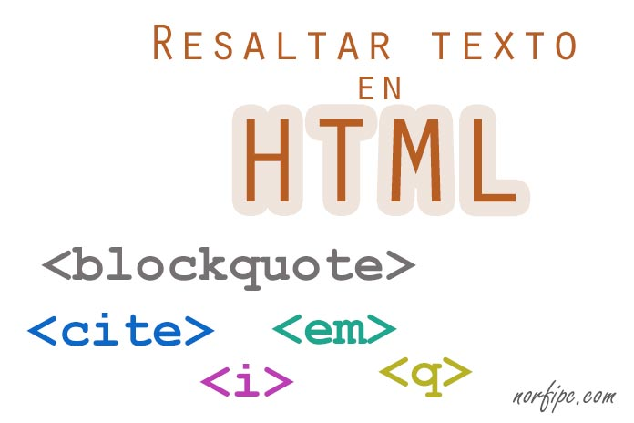
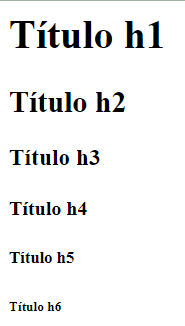
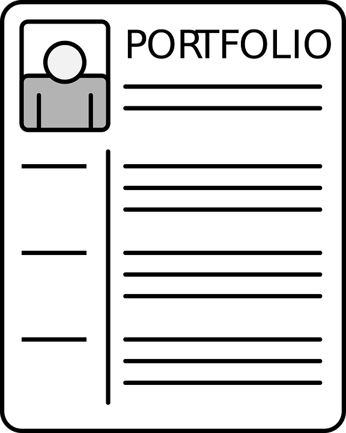

1. La importancia del diseño en tu presencia online
Página 6: HTML del bloque 1 del IDEVICE 1
Para comenzar a familiarizaros con la estructura de un documento HTML, y las diferentes partes del código que la componen, vais a comenzar un proceso de diseño web: vuestro portfolio personal. Realizaréis un diseño común que cada uno personalizará finalmente con sus propios trabajos en materia de esta asignatura. Cuando lo finalicemos, ¡podrás ponerlo a disposición de todos en Internet creando una nueva entrada en tu blog de la materia!
Basándoos en la estructura básica que se proporciona en el código de la derecha, seguid atentamente los pasos indicados en la zona izquierda:
Estructura base HTML
<!DOCTYPE HTML>
<html lang="es">
<head>
<title>Título de la página…</title>
<meta charset="UTF-8">
<meta name="description" content="Descripción de la página…">
</head>
<body>
<body>
<div class=”barra-lateral”>
<h3>Título…</h3>
<p>Texto</p>
</div>
<div class=”contenido”>
<h1>Otro título…</h1>
<p>Otro texto</p>
<p>Más texto… </p>
</div>
</body>
</body>
</html>
Usad la plantilla como sigue:
Personalizad el título en la etiqueta <title>.
Personalizad la meta-descripción en la etiqueta <meta name=”description” contenido=”… “>.
Dentro de la zona delimitada por las etiquetas <body> diseñad gráficamente el contenido de la página según como queráis montar el portfolio: qué secciones crearéis, si habrá imágenes, listas, distribución de párrafos según la información que contienen, ... Utilizad para la delimitación de zonas en este diseño gráfico el uso que se muestra en la plantilla de la etiqueta <div>.
Permite crear divisiones lógicas dentro de una página para aplicarles luego diferentes formatos (por eso se ha usado también el tributo "class" que veremos en el apartado sobre CSS).
Lumen dice Ideas
Podéis utilizar cualquier herramienta de dibujo para presentar a la clase el diseño general de vuestro portfolio.
Como posibles ideas de diseño podéis ver:
2. ¿Qué deseas mostrar en la web?
A partir de ahora es sencillo: vas a conocer las diferentes etiquetas para los diferentes tipos de elementos que puede tener una página HTML: texto normal, tablas, enlaces, imágenes, etc. Cualquier elemento de tu creatividad que necesites añadir a tu página web, podrás añadirlo conociendo las etiquetas que a continuación aparecen. ¡Lánzate al diseño!
Texto en HTML

Vamos a conocer las etiquetas que necesitarás para crear los diferentes formatos de textos: párrafos, encabezados, listas, tablas y enlaces. Para formatear el texto en línea (modificar el texto que aparece en las líneas escritas) dispones de varias etiquetas cuyos efectos puedes consultar en esta web: etiquetas para efectos de texto en línea.
Recuerda que toda etiqueta delimita el texto que modifica al principio y al final del mismo. Para marcar el final usamos la misma etiqueta que al principio, pero precedida de /. Para conocer las estructuras de texto, vamos a verlas a continuación:
Título y párrafos
HTML tiene seis etiquetas de títulos/subtítulos: de <h1> hasta <h6>, correspondiendo los números al nivel jerárquico. Es decir, una etiqueta <h1> sería el nivel jerárquico máximo, <h2> los subtítulos de los niveles h1 y así sucesivamente. Veamos un ejemplo:
 Y a la izquierda podemos comprobar el resultado que se obtiene. Por otra parte, los párrafos de texto normal se marcan con al principio del mismo y al final para indicar que finaliza el párrafo.
Crear listas
Para crearlas en HTML: en el caso de las listas enumeradas se usa la etiqueta <ol> y en el caso de las no enumeradas (con viñetas), se usa la etiqueta <ul>. En ambos casos se usa <li> para los elementos de la lista. Observa un ejemplo:
<ol>
<li>El primer punto</li>
<li>El segundo punto</li>
<li>El tercer punto</li>
</ol>
Lo que resulta en:
Crear tablas
La etiqueta <table> demarca la tabla. Dentro de ella, cualquier fila se demarca con <tr> que viene de “table-row” (fila de tabla, en inglés).
Podemos tener una primera fila con celdas con la etiqueta <th> (“table header”, cabecera de tabla en inglés) que actúan como cabecera y luego el resto, serían celdas (columnas) ordinarias con datos con la etiqueta <td>, “table data”. Todo ello lo puedes observar en el ejemplo:
Que resultará: Puedes no utilizar el atributo border, en cuyo caso la tabla se dibujará sin bordes en la pantalla.
Crear enlaces (links)
La etiqueta de un enlace es la etiqueta por excelencia en una página web. Esta etiqueta es <a>, de “anchor” (ancla en inglés) y su sintaxis básica es la siguiente:
<a target=”_blank” href=”[url del enlace]”>Texto del enlace</a>
La información clave, el enlace, viene en el atributo href, aquí debes insertar la URL del sitio que quiere enlazar. El atributo target también es muy importante. Sus valores más usados (y los únicos que necesitas realmente en la práctica) son “_blank”, que quiere decir la página del enlace se abre en una nueva pestaña/ventana, y “self”, que la abre en la pestaña/ventana del documento actual.
Cuesta pensar en una página web sin contenido multimedia. Se usan con múltiples objetivos: para el logotipo del sitio, en el contenido, para iconos en menús y otros elementos similares, y mil cosas más.
Como verás, insertar multimedia en páginas web en HTML es realmente fácil. ¡Vamos a ello!
Insertar imágenes
La etiqueta HTML para insertar una imagen en HTML es <img> y su sintaxis básica la siguiente:
<img src="[url de la imagen]" alt="[texto]" height="100" width="50">
Aquí el atributo src es el equivalente a href en el caso del enlace anterior: una URL que apunta a la imagen que quieres visualizar. Si la imagen se encuentra en el mismo servidor que el fichero html, basta con poner su nombre precedido de la ruta de carpetas a seguir hasta llegar a ella. Si está en una capeta de un servidor web, un ejemplo puede ser:
https://undominio.com/imagenes/laimagen.png
Otro atributo muy importante es alt:
En caso de que el enlace a la imagen esté roto, visualizará un texto alternativo que será el texto asociado a este atributo,
Además, Google lo tiene muy en cuenta para posicionar la imagen (en la búsqueda de imágenes).
Los atributos height y width te permiten especificar las dimensiones a las que ajustar la imagen en el navegador.
Insertar audio
Con esta estructura tu página mostrará el típico reproductor de audio con un botón de play, barra de progreso, control de volumen, etc.:
<audio controls>
<source src="ejemplo.mp3" type="audio/mpeg">
Tu navegador no soporta este elemento de audio.
</audio>
En la etiqueta source: el atributo src indica la URL con la ubicación del fichero de audio.
En el atributo type tenemos que especificar el tipo de formato de audio utilizado. En el ejemplo viene el más usado, MP3, pero también se admiten los formatos OGG (valor “audio/ogg”) y WAV (“audio/wav”).
Fíjate también en el texto de “Tu navegador…” que se ha añadido al elemento audio. Este texto normalmente no se visualizará, es para el caso de navegadores muy antiguos que no soporten este elemento de HTML 5.
En tu página aparecerá:
Insertar vídeo
El caso del vídeo es similar al del audio no requiere mucha explicación. Añadir que también se soporta el formato OGG. La sintaxis sería:
<video width="320" height="240" controls>
<source src="VID_PRO2BAC_REA05_Bucles_anidados_v02.mp4" type="video/mp4">
Tu navegador no soporta este elemento de audio.
</video>
Y aparecerá en tu web como:
Embeber Podcasts, vídeos YouTube, etc.
La manera general de trabajar con audio y vídeo es otra: subir estos contenidos a una o varias plataformas especializadas como SoundCloud para audio, YouTube para vídeo, etc.
Así ahorrarás muchos recursos en tu servidor. Embeber los contenidos subidos a estas plataformas es muy fácil: todas ellas suelen tener una opción de compartir para generar código HTML que simplemente se copia y pega en tu página.
En la imagen puedes ver lo que sucede en el caso de YouTube cuando se elige la opción de “compartir” debajo de un vídeo y, a continuación, “insertar”:
Formularios en HTML
Los formularios HTML hacen posible que un usuario envíe información a una web. Los comentarios de Instagram, Facebook o Twitter en el que realizas tus publicaciones son ejemplos de formularios HTML.
La mejor manera de ver los posibles comandos que puedes usar, es verlo en un ejemplo y analizarlo:
Ejemplo de formulario web
<form action="https://miweb.com/contacto/solicitud">
<p>Tu nombre:</p>
<input type="text" name="nombre"/>
<p>Tu email:</p>
<input type="text" name="email"/>
<p>Asunto de tu solicito:</p>
<input type="text" name="asunto"/>
<p>Texto de tu solicitud:</p>
<input type="textarea" name="solicitud"/ rows="5" cols="40">
<p><input type="submit" value="Enviar"></p>
</form>
Explicación del ejemplo
En este ejemplo, con los elementos input podemos crear campos en la página que recogen la información que el usuario introduce, una información estructurada que puede ser procesada por una máquina.
En este formulario, tenemos cuatro parejas campo – valor:
Nombre – [lo que haya tecleado el usuario]
Email - [lo que haya tecleado el usuario]
Asunto - [lo que haya tecleado el usuario]
Solicitud - [lo que haya tecleado el usuario]
En el momento que el usuario haga clic en el botón del formulario, esta información se envía a la URL especificada en el atributo action de la etiqueta form.
Imagen que aparecería en la web con el ejemplo anterior.
CURIOSIDAD: ¿Cómo se procesa un formulario? Lo que sucede a partir del momento en el que se pulsa el botón de Enviar, sucederá en el servidor, ya no estamos en la página, la página ya ha hecho su trabajo: enviar al servidor esta información. Entonces, para poder usar el contenido de un formulario enviado por un usuario al servidor, tiene que haber algún tipo de programa que procese esa información en el servidor. Esto lo veremos más adelante en el recurso.
Clavis dice: Encuentra puntos críticos
Para conseguir alcanzar una meta es importante que seas un buen o buena estratega. Es decir, tener métodos, técnicas, “trucos” para llegar antes o de forma más fácil donde tú quieres.
Ahora te voy a enseñar una estrategia, ¡Aprovéchala para alcanzar tu reto!
El nombre de la estrategia es localización de puntos críticos. Cuando estás desarrollando una tarea como esta lectura es normal que encuentres puntos que te resulten complicados y que puedan llegar a bloquearte si no sabes tratarlos adecuadamente. En esta estrategia vas a aprender a detectar los puntos difíciles y a enfrentarte a ellos aplicando algunos consejos básicos que te sugieran cómo actuar en cada caso para superar la dificultad.
Tómate el tiempo que necesites y recuerda que siempre puedes preguntarle al docente o a algún compañero o compañera cuando no entiendas algo.
¡Ánimo, seguro que lo haces genial!
3. Para diseños, colores...
En HTML cualquier color se puede generar combinando con diferentes niveles de intensidad los tres colores básicos: rojo, verde y azul. Por razones informáticas se usan 256 niveles en cada uno (de 0 a 255, valores que corresponden a un byte).
Estos códigos de colores HTML se suelen especificar en tripletes RGB. Mira los ejemplos:
0,0,0: negro oscuro (todos los colores con intensidad cero).
255,255,255: blanco (todos los colores con máxima intensidad).
255,0,0: rojo puro intenso (máxima intensidad para el rojo y cero para el resto).
128,128,0: rojo y verde de intensidad mitad en los dos lo que daría un marrón verdoso.
Muchas veces no se usan los números del sistema decimal, a los que estamos acostumbrados, sino que se usa también mucho el sistema de numeración hexadecimal, donde se le antepone al número la almohadilla (#): 255,138,138 en hexadecimal sería #FF8A8A.
¿Cómo ponemos entonces las letras y fondos de nuestras páginas web en diferentes colores? La respuesta es sencilla: aplicando el atributo color a la etiqueta correspondiente. Averigua, en las opciones dadas, qué hace la etiqueta proporcionada. Ayúdate si te hace falta del conversor de colores: conversor de colores
4. Atractivo y llamativo pero siendo informativo
Ya conoces las bases del formateo de textos y presentación de elementos en un documento HTML para una página web. ¡Es el momento de crear el contenido que aparecerá en cada sección de tu portfolio según el diseño presentado en grupo en el punto 1!
De momento, en este ejercicio de esta sección HTML sólo vamos a crear el contenido. El posicionamiento de este contenido dentro de la página web lo haremos en la siguiente sección donde aprenderás a utilizar CSS, que localiza cada sección en su lugar gracias al estilo aplicado.
Entonces, lo que debes realizar en este ejercicio es:
Formatea los textos según sean: cabeceras, párrafos, según su tamaño, su color, ...
Coloca los elementos multimedia (imágenes, vídeos, sonidos) que quieras que aparezcan en cada sección.
Crea los índices de las secciones: las listas de elementos que puedan ser enlaces a cada tipo de información, a cada contenido específico al que referencia ese elemento (sobre todo si has decidido utilizar una barra lateral con enlaces a las distintas partes del portfolio digital).
Lumen dice Ayuda
En el caso de que uses una barra lateral con enlaces a las distintas secciones de tu portfolio de diferente contenido, te recomendamos que en dichos enlaces utilices anclas a los títulos de la sección que tiene dicho contenido (encabezado de sección). Por ejemplo:
Un ancla es una etiqueta con atributo id y sin atributo href. La etiqueta del sitio al que apunta debe también llevar también el atributo id para localizar el sitio referenciado.
Kardia dice Para saber más...
Por mayor comodidad, te proporcionamos aquí una tabla con las etiquetas básicas de formateo de texto en línea. Hay mucha información por Internet, pero en líneas generales estas son las más utilizadas:

 Imagen que aparecería en la web con el ejemplo anterior.
Imagen que aparecería en la web con el ejemplo anterior.